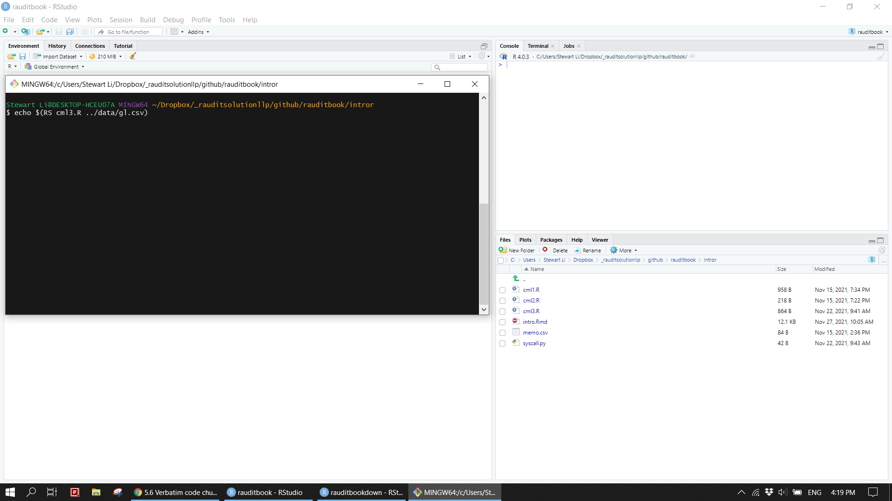
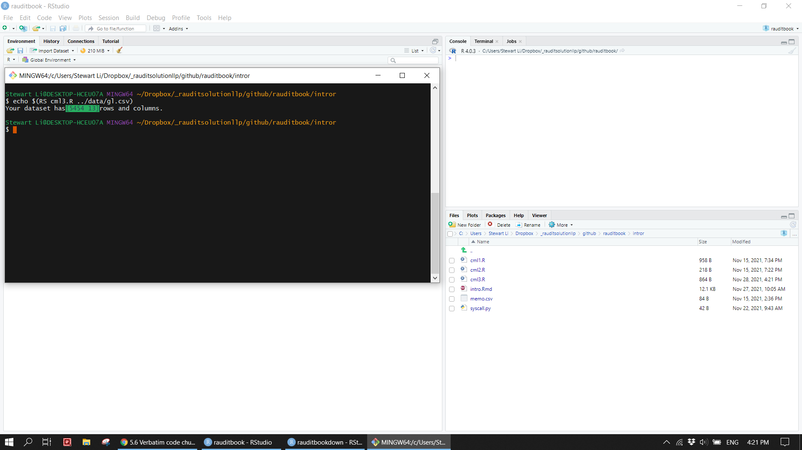
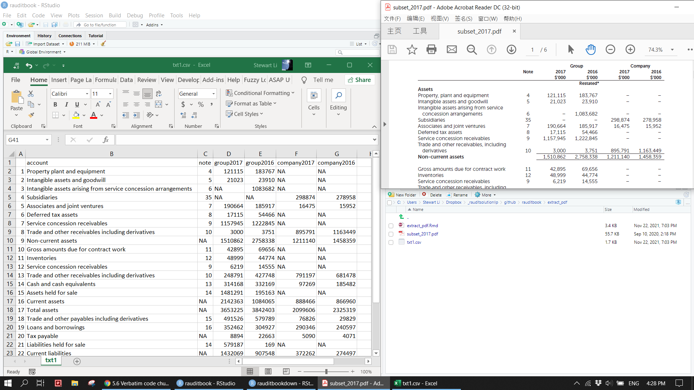
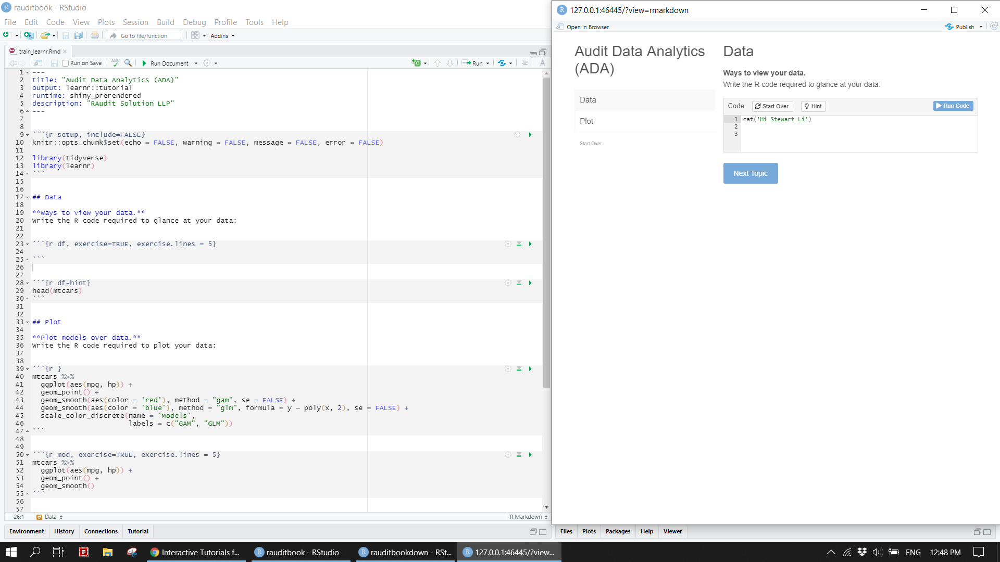
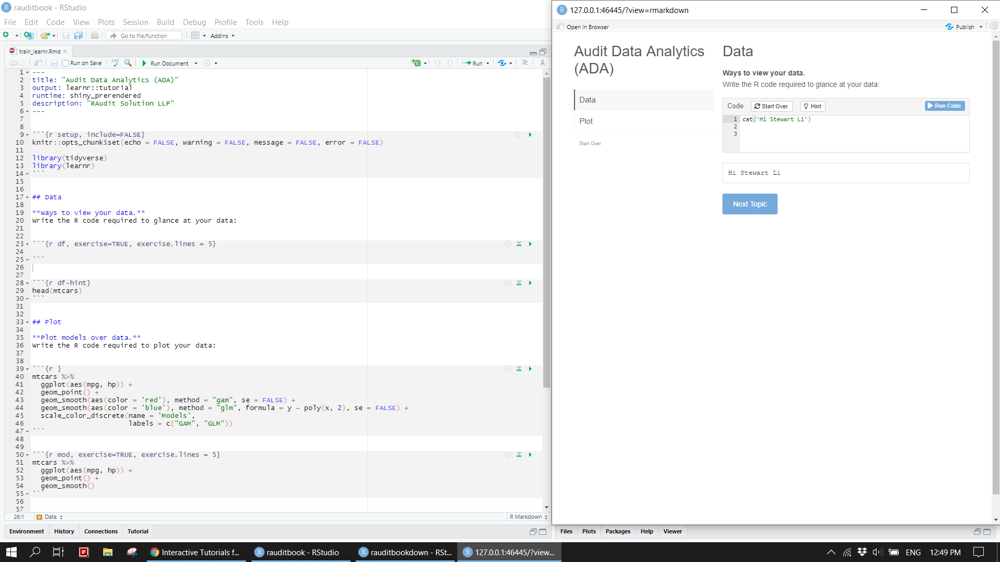
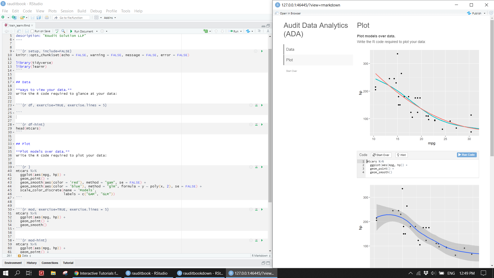

Chapter 6 Utilities
6.1 Command line tool
Write and run a R script on a terminal.
st_cml <- function(df){
cat(paste0("Your dataset has",
'\x1b[6;30;42m', "[", dim(df)[1], " ", dim(df)[2], "]", '\x1b[0m',
"rows and columns", ".\n"))
}
main <- function() {
args <- commandArgs(trailingOnly = TRUE)
f <- args[1]
stopifnot("Please specificy a csv file" = length(f) == 1)
stopifnot("Please specificy a csv file" = tools::file_ext("data/gl.csv") == "csv")
st_cml(read.csv(file = f))
}
main()knitr::include_graphics("img/cml1.png")
knitr::include_graphics("img/cml2.png")
6.2 PDF data
Data inside of PDF documents can be extracted via pdftools. Data inside of a website can be pulled out via rvest. Web scrapping is not covered here. For a detailed example, refer to Listed companies in Singapore.
txt <- pdftools::pdf_text(here::here("suppliments/subset_2017.pdf"))
txt1 <- txt[1] %>%
str_split("\n") %>%
unlist()txt1_start <- stringr::str_which(txt1, "Property, plant and equipment")
txt1_end <- stringr::str_which(txt1, "Net assets")
txt1_raw <- txt1[txt1_start:txt1_end] %>%
str_trim() %>%
str_replace_all("\\s{2,}", "|") %>%
str_remove_all(",") %>%
enframe() %>%
separate(value,
into = c("account", "note", "group2017", "group2016", "company2017", "company2016"),
sep = "\\|", extra = "merge", fill = "right") %>%
dplyr::filter(!str_detect(account, "[0-9]")) %>%
dplyr::filter(!account %in% c("Intangible assets arising from service",
"Trade and other receivables including",
"Liabilities",
"Trade and other payables including")) %>%
mutate(account = case_when(
account == "concession arrangements" ~ "Intangible assets arising from service concession arrangements",
account == 'derivatives' & group2017 == 3000 ~ "Trade and other receivables including derivatives",
account == 'derivatives' & group2017 == 248791 ~ "Trade and other receivables including derivatives",
account == 'derivatives' & group2017 == 491526 ~ "Trade and other payables including derivatives",
account == 'derivatives' & group2017 == 35895 ~ "Trade and other payables including derivatives",
TRUE ~ account)) txt1_raw[txt1_raw$account == "Non-current assets", ][3:ncol(txt1_raw)] <- txt1_raw[txt1_raw$account == "Non-current assets", ][2:(ncol(txt1_raw)-1)]
txt1_raw[txt1_raw$account == "Current assets", ][3:ncol(txt1_raw)] <- txt1_raw[txt1_raw$account == "Current assets", ][2:(ncol(txt1_raw)-1)]
txt1_raw[txt1_raw$account == "Total assets", ][3:ncol(txt1_raw)] <- txt1_raw[txt1_raw$account == "Total assets", ][2:(ncol(txt1_raw)-1)]
txt1_raw[txt1_raw$account == "Current liabilities", ][3:ncol(txt1_raw)] <- txt1_raw[txt1_raw$account == "Current liabilities", ][2:(ncol(txt1_raw)-1)]
txt1_raw[txt1_raw$account == "Net current assets", ][3:ncol(txt1_raw)] <- txt1_raw[txt1_raw$account == "Net current assets", ][2:(ncol(txt1_raw)-1)]
txt1_raw[txt1_raw$account == "Non-current liabilities", ][3:ncol(txt1_raw)] <- txt1_raw[txt1_raw$account == "Non-current liabilities", ][2:(ncol(txt1_raw)-1)]
txt1_raw[txt1_raw$account == "Net assets", ][3:ncol(txt1_raw)] <- txt1_raw[txt1_raw$account == "Net assets", ][2:(ncol(txt1_raw)-1)]
txt1_raw[txt1_raw$account == "Tax payable", ][3:ncol(txt1_raw)] <- txt1_raw[txt1_raw$account == "Tax payable", ][2:(ncol(txt1_raw)-1)]txt1_clean <- txt1_raw %>%
select(-name) %>%
mutate(across(-c(account), readr::parse_number))
write.csv(txt1_clean, here::here("suppliments/txt1.csv"))knitr::include_graphics("img/pdf.png")
6.3 Learnr
You can easily make a interactive training materials to facilitate new staffs to get off the ground as quickly as possible.
knitr::include_graphics("img/learnr1.png")
knitr::include_graphics("img/learnr2.png")
knitr::include_graphics("img/learnr3.png")